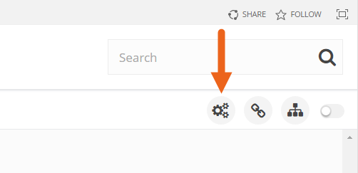
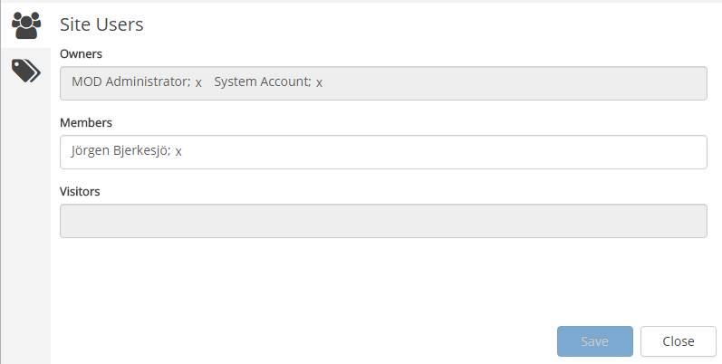
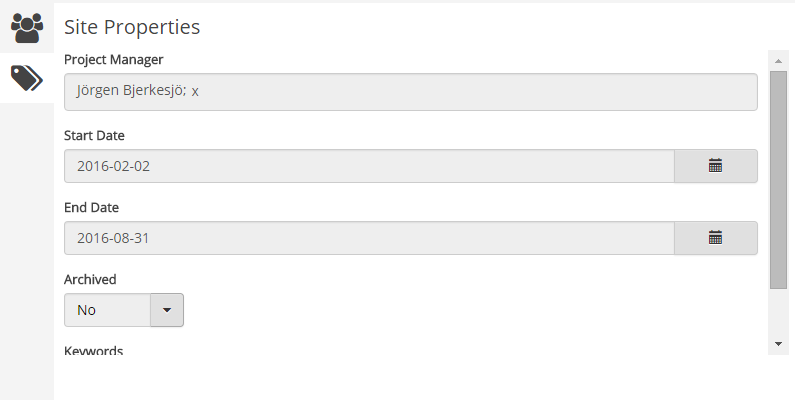

Site Quick edit is available in team sites and similar, for site owners. The purpose is twofold:
Which properties (fields) should be avaible is set in the site template for each type of site, that can't be changed here. All sites created from a certain template always has the same properties fields.
To access Site Quick Edit, click the button:

The first tab is used for adding and removing site users:

The second tab is used for editing the properties, for example:

There are no settings for the control itself.